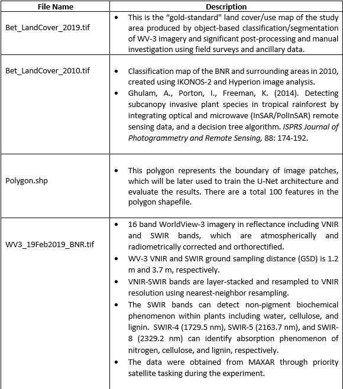

In this course module, students are first introduced traditional machine learning
including random forest (RF), support vector machine (SVM), and pixel-based deep
learning using forest cover mapping in Madagascar as a case study. Then, the
Convolutional Neural Network (CNN) approach is introduced, which utilizes spectral,
textural and spatial information from WorldView-3 VNIR and SWIR data for
classification and forest cover mapping in a fully automated learning process.
The CNN approach used in this lab is U-Net (similar to Object-Based Image Analysis, OBIA
in the remote sensing field. By completion of this lab, students can understand pros
and cons of pixel-based (SVM, RF, DNN) and CNN-based OBIA; students also investigate
forest change and impacts of human geography and conservation efforts on preserving forest habitats in Madagascar.
The study area is the Betampona Nature Reserve (BNR), outlined by the white boundary in Figure 1 (a).
The BNR is located in the eastern coast of Madagascar; the surrounding areas and the nature reserve make
up of about 100 square km. This is a species rich area which provides the researchers with a “living laboratory”
for the studies of human-forest interactions.
Madagascar houses a lively and diverse ecosystem, but due to encroachment,
deforestation tactics (illegal logging), aggressive agricultural practices and
urbanization, the environment has greatly altered. Additionally, with the presence
of invasive species such as Molucca Raspberry, Madagascar Cardamom, and Strawberry
Guava, biodiversity continues to be threatened.

The original ground truth data were collected in the field using GPS surveys.
A total of nearly 400 polygons in different sizes and shapes and point samples
were collected. These ground surveys were used to produce the “gold-standard"
reference imagery (Bet_LandCover_2019.tif) as described in the published paper.
For this course module, however, we generated a new set of training samples from
the gold-standard reference imagery to simplify the implementation.